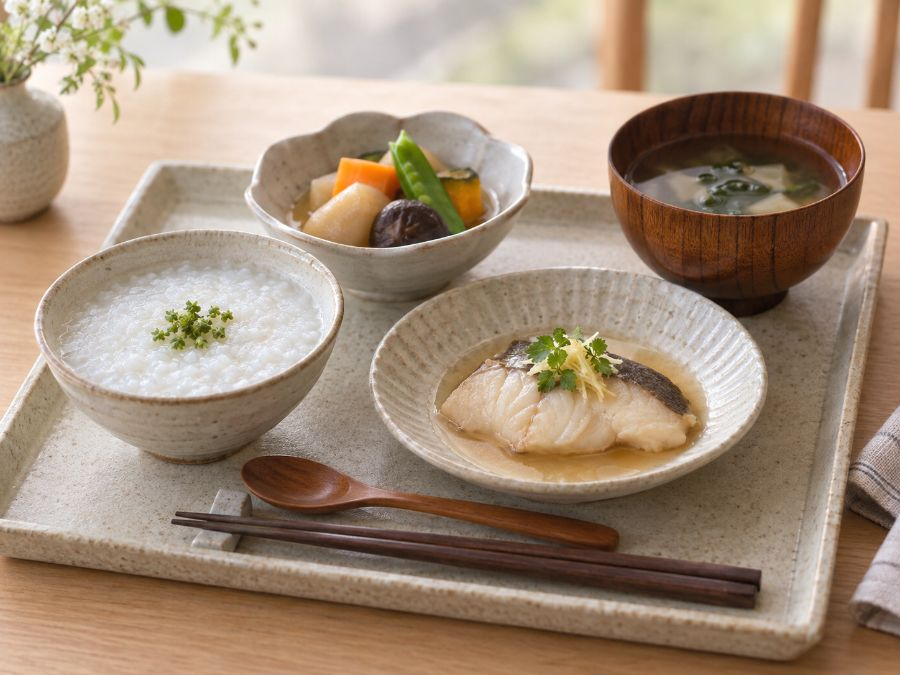

やわらか食の宅配
刻むだけでは、
解決しない。やわらか食・ムース食の宅配弁当と4段階の食形態
食べにくそうだから細かく刻む。よくある対応ですが、飲み込む力が落ちている場合、刻んだ食材はかえって危険です。口の中でまとまらず、気管に入りやすくなります。

やわらか食の宅配｜結論だけ知りたい方へ
4段階すべてを揃えているサービスは限られます。状態が変わっても移行できるところを選んでおくと、後で探し直す必要がありません。
段階の判断は自己流でやらないでください。言語聴覚士や医師、担当の管理栄養士が評価した上で段階を決めます。ここでは「指示された段階に対応しているサービスを探す」ための情報を扱っています。
やわらか食の宅配で選べる4段階
| 段階 | 状態 | 対象 |
|---|---|---|
| 通常食 | 普通の固さ | 噛む力に問題がない |
| ソフト食 | 舌でつぶせる固さ | 噛む力が落ちてきた |
| ムース食 | 均一でなめらか | 歯がない・噛む力がほとんどない |
| ピューレ食 | とろみのある液状 | 飲み込む力が落ちている |
見た目が食事の形を保っているかどうかも重要です。ミキサーにかけただけのものは、食欲が落ちて摂取量が減ります。
4段階に対応しているサービス
市販の宅配食で4段階すべてを揃えているところは限られます。段階が変わったときに同じサービス内で移行できると、手続きが簡単です。
食楽膳
定期で最大10%引SOMPOケアが運営する管理栄養士監修の冷凍おかず。通常食・ソフト食・ムース食・ピューレ食の4段階に対応しているのが最大の特徴で、噛む力や飲み込む力に合わせて選べます。7食から28食まで食数を調整できます。
食形態と価格を見る ＞やわらか食から始める場合
ムース食まで必要ない段階なら、選択肢は広がります。特許技術で食材の形を保ったまま柔らかくしているものもあり、見た目が普通の食事に近いぶん食欲が落ちにくい。
メディカルフードサービス
総出荷600万食消費者庁の指針に基づいて栄養価を管理した宅配食。エネルギー、塩分、たんぱく質、それぞれを「かなり抑える」「少し抑える」の段階別に選べるのが他社との違いです。凍結含浸法という特許技術のやわらかシリーズも扱っています。創業15年以上の専門企業。
シリーズと価格を見る ＞健康直球便
定期縛りなし定期購入の縛りがなく、必要なときだけ頼めるのが最大の利点です。糖質・カロリー調整食、たんぱく・塩分調整食、消化にやさしい食、やわらか食、ムース食まで揃っています。150種類以上から選べて、2回目以降は1セット500円引き。
セットを見る ＞やってはいけないこと
- 細かく刻んで対応する。飲み込む力が落ちている場合、まとまらず危険です
- 段階を自己判断で下げる。不要に柔らかくすると、噛む力がさらに落ちます
- 水分にとろみを付けずに出す。むせる原因は固形物より水分のほうが多い
- 食事中に急かす。飲み込むタイミングが崩れます
栄養が落ちやすい段階
やわらか食に移行すると、多くの場合たんぱく質の摂取量が落ちます。肉や魚が食べにくくなるためです。ここが落ちると筋肉が減り、さらに食べる力が落ちるという流れになります。
宅配弁当を使う利点はここにあります。栄養価が計算されているので、食形態を変えてもたんぱく質量が保たれます。
段階を上げる・下げるときの判断
一度決めた段階をずっと続けるわけではありません。状態は変わります。
| 起きていること | 考えられること | 相談先 |
|---|---|---|
| むせる回数が増えた | 飲み込む力が落ちている可能性 | 言語聴覚士・医師 |
| 食事に時間がかかる | 噛む力か、集中の問題 | 歯科・医師 |
| 食べ残しが増えた | 量が多い、または味が合わない | まず量を減らして様子を見る |
| 体重が減ってきた | 摂取量が足りていません | 医師・管理栄養士 |
| 楽に食べられている | 段階を上げられる可能性も | 自己判断せず評価を受ける |
最後の行が重要です。不要に柔らかいものを続けると、噛む力がさらに落ちます。「安全だから」で下げたままにしないでください。
とろみの付け方
固形物よりも、水分でむせることのほうが多い。水やお茶は速く流れるため、飲み込むタイミングが合いません。
とろみの濃度も、本来は専門家の評価に基づいて決めます。自己判断で始める前に一度相談してください。
食事の姿勢
食形態を整えても、姿勢が崩れているとむせます。あごが上がった状態が最も危険です。
- 椅子に深く座り、足を床につける。足が浮くと体が安定しません
- あごを軽く引く。上を向いた状態で飲み込むと、気管に入りやすくなります
- 食後すぐに横にならない。30分は起きた姿勢を保ってください
- 介助する側は座る。立って介助すると相手のあごが上がります
宅配食を使う理由
やわらか食を自宅で作るのは、調理の手間だけでなく固さを一定に保つのが難しいという問題があります。日によって固さが変わると、むせるリスクが上がります。
市販の製品は固さの基準が統一されているため、毎回同じ状態で出せます。これは安全面での利点です。加えて、やわらか食に移行するとたんぱく質が落ちやすいのですが、栄養価が計算されていればここも保たれます。
比較して選ぶ